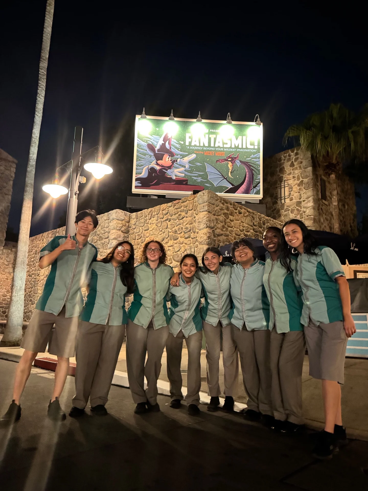

Hi, I’m Jenna.
I’m a Themed Entertainment student at the University of Southern California, pursuing a minor in Architecture and graduating in 2029.
I’m interested in the space between imagination and reality: how creative ideas become thoughtfully designed places and experiences. My work brings together storytelling, spatial design, modelmaking, and the practical thinking that helps an idea work in the real world.
Education
University of Southern California
Themed Entertainment
Architecture minor
Class of 2029
Creative practice
Concept development
Spatial storytelling
Digital and physical modeling

Imagination, with a plan.
I approach design with both a creative and analytical mindset. I like starting with rough sketches, then developing ideas through detailed layouts and 3D models. I’m drawn to the details that make a space feel convincing, from scale, proportions, and sightlines to textures, circulation, and how everything fits together.
I always think about the experience from more than one perspective: what guests notice and how they move through a space, as well as how that space can be built, operated, and brought to life. I want people to feel like they are a character in the world they have stepped into.

Disney College Program
Attractions Cast Member · Walt Disney World
During a three-month summer internship with the Disney College Program, I worked in attractions at The Twilight Zone Tower of Terror and as an amphitheater attendant for Fantasmic! At Tower of Terror, I welcomed guests, answered questions, helped nervous visitors feel comfortable, checked safety restraints, dispatched the attraction, and monitored operations from the control desk.
The experience gave me a guest-facing and operational perspective on immersive entertainment. I loved seeing the excitement of first-time visitors, learning how the attraction worked behind the scenes, and noticing how the atmosphere and the people working in a space all contribute to the experience.

Stories beyond the studio.
Outside of my academic and creative work, I’m an avid fan of movies, television, video games, and books. I love getting lost in imaginative stories and exploring the worlds built around them.
From the first idea to the finished experience.
I’m interested in opportunities that bring creative vision and practical execution together, especially themed entertainment, immersive environments, modelmaking, and project management. I enjoy developing digital and physical models, thinking through how a design can function, and coordinating the details that help a larger project come together.
My goal is to help create places that capture people’s imaginations, invite exploration, and make them feel part of another world—while making sure the idea can work beyond the page or screen.